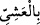

sevgisi” değil, “atların durumundan haberdar olmak”tır. Bununla birlikte fiil,
Süleyman’ın bunlara karşı son derece sevgi duyduğunu göstermek için, “at sevgisi”
ifâdesine müteaddî olmuştur. Çünkü insanoğlu bazen bir şeyden çok hoşlanır, fakat onu
sevmek istemez. Tıpkı sıhhatine zararlı şeyler isteyen bir hasta gibi. -Bir hastaya, “ne
istiyorsun?” denince, “istememem gereken şeyleri istiyorum” demesi de bu sebepledir.-
Bir şeyi seven ve o şeyi sevmeyi de seven bir kişinin durumu ise muhabbetin zirvesini
gösterir.
Âyette geçen () kelimesi, malın çokluğunu ifâde eder. Bundan maksad, Süleyman’ı
meşgul eden atlardır. Çünkü onlar da birer maldır. Süleyman’ın bunlar için “hayr”
kelimesini kullanması, hayrın bunlarla kazanılmasından dolayıdır. Ya da bunların bizzat
hayır olması hasebiyledir. Peygamber Efendimiz (s.a.) de bir hadisinde: “Hayr”, yâni
ecir ve ganimet, “kıyamet gününe kadar atların yelelerine bağlanmıştır” [22] buyurur.
()’den maksad ise () akşam üstü ifâdesinin de delâletiyle ikindi namazıdır.
Namazdan, “anmak” anlamına gelen “zikir” olarak bahsedilmektedir; zira namaz, -
Keşfü’l-esrâr’da da belirtildiği üzere- tamamen Allah’ı anmakla geçer. Ya da zikir, o
vakte mahsus bir vird de olabilir.
Âyetin mânâsı şöyledir: Rabbimi anacağıma, at sevgisine yöneldim; bunu onun yerine
koyarak tercih ettim. Fakat benim gibi birinden Rabbini anmak ve O’na tâatle meşgul
olmak beklenirdi.
“Nihâyet güneş battı.”
el-Müfredât’ta der ki: (), gizlenmek demektir. () fiilindeki zamir “güneş”e
râcîdir. Daha önce zikredilmediği halde güneşe zamir göndermek, vaktin akşam üstü
olması sâyesinde mümkün olmuştur. Çünkü o sırada güneşten başka gizlenecek bir şey
yoktur. () ise güneşin batıp kaybolduğu yerdir.
“Nihâyet” anlamına gelen () kelimesi, “tercih ettim” mânâsındaki () fiiline
müteallık olup -Sevginin resmî geçit boyunca sürüp gitmesi itibarıyla- bu tercihin
güneşin batışına kadar sürdüğünü anlatır. Mânâ şöyledir: “At sevgisini Rabbimi anmağa
tercih ettim ve bu durum güneş gizleninceye yâni batıncaya dek sürdü.” Burada güneşin
batım yerindeki batışı, tesettürlü genç bir kızın hicâb ve örtüsüyle örtünmesine
benzetilmiştir.
Gizleninceye kadar ifâdesindeki () fiilindeki zamirin, muhteşem atlar anlamına
gelen () kelimesine râci olduğu da söylenir ki, bu durumda ifâde, “atlar gecenin
karanlığıyla (perdesiyle) gizleninceye kadar” demek olur. Zira gecenin karanlığı herşeyi
örter.